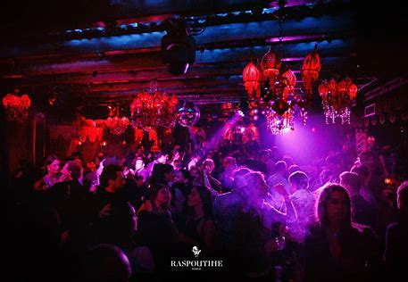
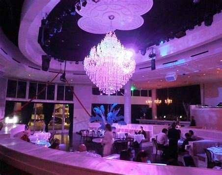
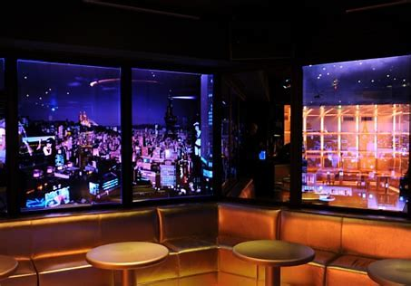

Paris is known for its vibrant nightlife, with an endless array of clubs, bars, and lounges to choose from. From trendy rooftop bars to underground techno clubs, Paris has something for everyone looking to dance the night away. The city's nightlife scene attracts a diverse crowd, including locals and visitors from around the world. Many of the clubs boast unique features, such as stunning interior design, outdoor terraces, and world-class DJs. Whether you're looking for a high-energy dance floor or a more intimate atmosphere, Paris has a club to suit your taste. With its lively and diverse nightlife scene, Paris is a must-visit destination for anyone looking to experience the best of European nightlife.
Accueil| L'Arc |
|
|
| L'Arc is a world-renowned nightclub located in the heart of Paris, known for its luxurious atmosphere and high-energy parties. The club features stunning interior design, with intricate chandeliers, plush seating, and a state-of-the-art sound system. L'Arc has hosted some of the biggest names in the music industry, attracting a diverse and international crowd. With its exclusive VIP sections, top-notch bottle service, and expertly crafted cocktails, L'Arc offers an unforgettable nightlife experience. Whether you're looking to dance the night away or enjoy a sophisticated night out with friends, L'Arc is the ultimate destination for party-goers in Paris. |
| Raspoutine |
|  |
| Raspoutine is a legendary nightclub located in the heart of Paris, known for its opulent decor and high-energy parties. The club's interior is inspired by the Russian Imperial era, featuring luxurious fabrics, ornate chandeliers, and plush seating. Raspoutine has been a fixture in the Parisian nightlife scene since it opened in 1965, attracting a diverse and international crowd. The club has hosted some of the biggest names in music, with top-notch DJs and live performances. With its exclusive VIP sections, expertly crafted cocktails, and unforgettable atmosphere, Raspoutine offers a one-of-a-kind nightlife experience. Whether you're looking to dance the night away or enjoy a sophisticated night out with friends, Raspoutine is the ultimate destination for party-goers in Paris. |
| La Bagatelle |
|  |
| Bagatelle is a stylish nightclub located in the heart of Paris, known for its chic decor and sophisticated atmosphere. The club features elegant interior design, with plush seating, crystal chandeliers, and a state-of-the-art sound system. Bagatelle attracts a stylish and fashionable crowd, with a focus on high-end bottle service and VIP experiences. The club has hosted some of the biggest names in music, with top-notch DJs and live performances. With its exclusive VIP sections, expertly crafted cocktails, and sleek atmosphere, Bagatelle offers an unforgettable nightlife experience. Whether you're looking to dance the night away or enjoy a sophisticated night out with friends, Bagatelle is the ultimate destination for party-goers in Paris. |
| Le Matignon |
|  |
| Le Matignon is a luxurious nightclub located in the heart of Paris, known for its chic decor and high-end clientele. The club features stunning interior design, with elegant furnishings, crystal chandeliers, and a sophisticated ambiance. Le Matignon attracts a stylish and fashionable crowd, with a focus on exclusive VIP experiences and high-end bottle service. The club has hosted some of the biggest names in music, with top-notch DJs and live performances. With its exclusive VIP sections, expertly crafted cocktails, and elegant atmosphere, Le Matignon offers a one-of-a-kind nightlife experience. Whether you're looking to dance the night away or enjoy a sophisticated night out with friends, Le Matignon is the ultimate destination for party-goers in Paris. |
| Le Duplex |
| Le Duplex is a legendary nightclub located in the heart of Paris, known for its high-energy parties and impressive light shows. The club features stunning interior design, with futuristic decor and state-of-the-art lighting and sound systems. Le Duplex attracts a diverse and international crowd, with a focus on high-energy dance music and a lively atmosphere. The club has hosted some of the biggest names in music, with top-notch DJs and live performances. With its exclusive VIP sections, expertly crafted cocktails, and unforgettable atmosphere, Le Duplex offers an unparalleled nightlife experience. Whether you're looking to dance the night away or enjoy a fun night out with friends, Le Duplex is the ultimate destination for party-goers in Paris. |